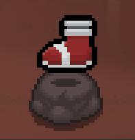
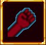

Periklis Lazarides
Game Developer | Programmer | Game Designer
Game Developer | Programmer | Game Designer
Hello! I'm a graduate of the Computer Games Programming course at De Montfort University,
where I developed a strong foundation in game development, systems programming, and AI-driven gameplay.
Throughout my studies, I’ve worked extensively with both Unity and Unreal Engine, building a range of gameplay systems, prototypes, and AI behavior models.
Currently pursuing Master’s degree in Artificial Intelligence, aiming to deepen my understanding of intelligent systems and apply advanced AI techniques in the context of game development.
I'm passionate about creating immersive, systems-driven gameplay experiences and exploring how AI can shape the future of interactive storytelling and opponent behavior.
During my internship at CYENS as part of the ITICA team,
I had the opportunity to work closely with immersive technologies and contribute to VR-focused projects.
This experience strengthened my understanding of virtual reality development,
documenting/analysing data, and integrating user input systems.
I also gained practical skills in Unity, VR interaction design, and troubleshooting hardware–software integration issues.
Overall, the internship gave me hands-on experience with real-world VR
workflows and deepened my confidence in developing intuitive and engaging immersive applications.
I hope that after completing my Master’s degree, I will be able to pursue a PhD to further develop my understanding, skills, and learning abilities—ultimately reaching a point where I can confidently learn anything I set my mind to.
A fighting game I made for my undergraduate thesis using Unity Engine. The main focus of the project was to develop the CPUs (opponents) of the game using AI techniques like Finite State Machine, Fuzzy State Machine and Deceision Trees.

This is a small personal project made in my second year as a student. Spacewalker is inspired by the popular game "Jump Knight", but instead of having a fixed level, it randomly generates obstacles, making it theoretically infinite and give it an "arcade" feel.

Implemented CNN and ANN using the MNIST-fasion dataset. Aim of the project was to make
2 basic implementations of the models and 2 improved versions to measure their
differences in performance.
This was part of my first module in my Master’s degree (Neural Systems).
3rd person multiplayer shooter game I made during my second year as a student as a groupwork.
Multiplayer was possible using the Unreal Engine Steam plugin. Typical 1v1 format, whoever gets 5 kills first wins.

Projects I made during my Internship in CYENS. The main goal of the project is to make 2 simulations for goalkeepers (VR, Video). The goal of the research is to compare these two versions, to determine wether training goalkeepers with VR experiences is viable.

Project I made during my CYENS summer Internship.
A tool that can be added to a character to automatically make them a "guide" npc. Variables like:
audio, text, events on start, events on end, condition to move on, remind the player etc. .
Using Unity's scriptable object to construct desired locations/attractions for the guide.
This mod adds the "Flash" spell from League of Legends as an active item in the Binding of Isaac: Rebirth, introducing unique properties in gameplay.

This mod adds the "Sonic Sneakers" as a passive item in the Binding of Isaac: Rebirth, granting the player maximun speed upon picking up.
"Serious Punch" from the Anime "One Punch Man" is added as a weapon that instantly kills anything in one punch. The item is only accessible after the player beats the final boss of the game.

| Programming Languages | C++, C#, Python, JavaScript |
| Game Development Skills | Unity, Unreal Engine 5, AI behaviour programming, Shader Programming |
| Other Technical Strengths | Version control, Debugging & optimization, Performance profiling, UX/UI design basics |
| AI & Machine Learning (Current/Future learning) | Neural Systems (ANN, CNN), GAN, NLP, Evolutionary Algorithms |